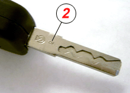
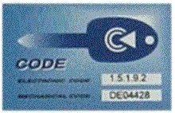

This function is used to program keys. When programming, you must have all keys available. In order to perform the programming you need to enter a security code.
Observe:
All keys must be reprogrammed.
Old keys will be erased.
Maximum number of keys that can be stored is 8.
Only applies to vehicles equipped with CODE 2 system. This can be recognized by number 2 being stamped on the key subject (See picture below).

Test conditions:
Ignition on, engine off.
Battery voltage above 12 V.
The vehicle has its own specific code card, where the Electronic Code are available. The code must be available to perform a programming (See picture below).

Procedure:
Start the function.
Turn on the ignition with an unprogrammed key. Press "OK".
Enter the security code as shown on the code card. Press OK and wait for acknowledgement.
If more keys is to be programmed select "Yes".
Continue with the function until all keys are programmed (maximum 8 keys can be stored):
A dialog box presents the number of keys to store.
Press "OK" to continue.
When programming the remote control, all the remote controls must be stored at the same time.
Press "OK". Immediately press any remote button for more than 5 seconds.
A dialogue box presents the number of stored remote controls.
Check the function of the keys.
Test of the remote control is performed with the diagnostic system disconnected and all vehicle openings closed. It can sometimes take a while before the remote control works after learning.